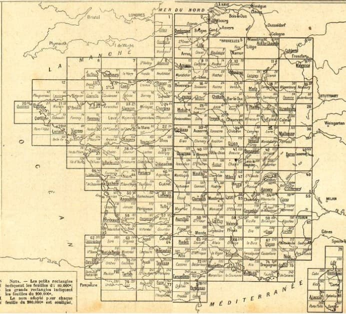
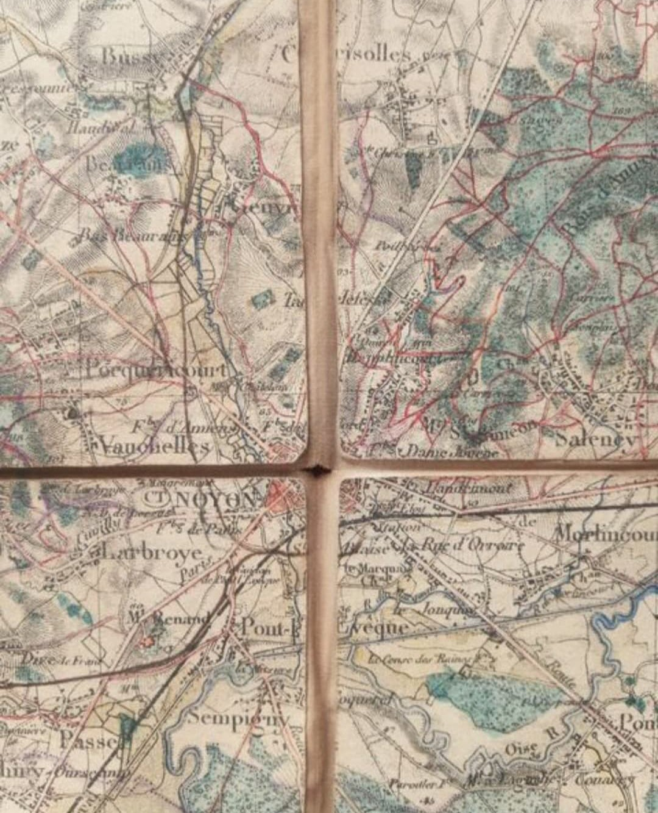
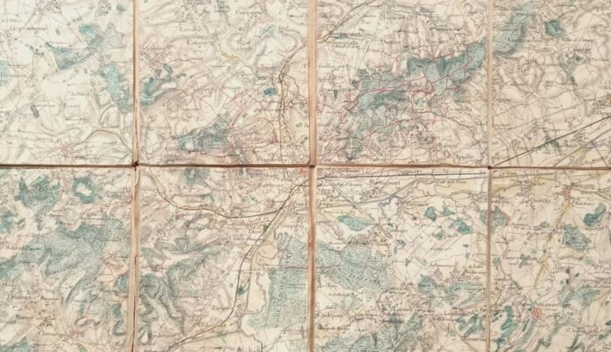
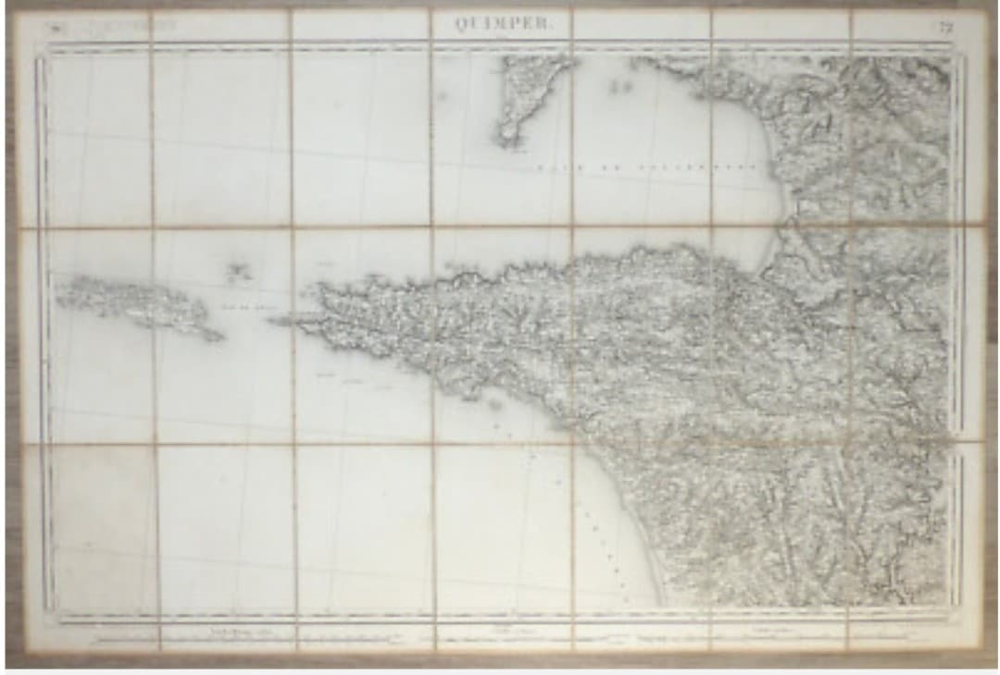
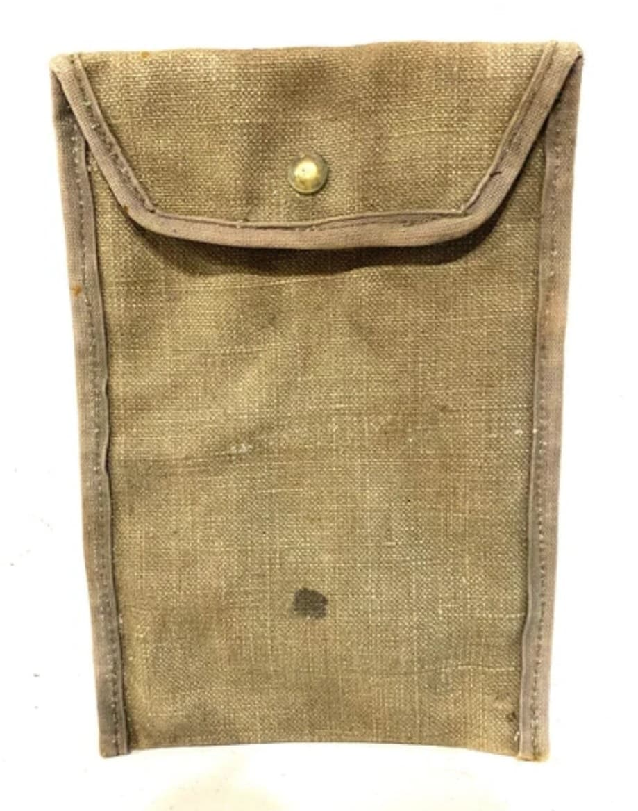
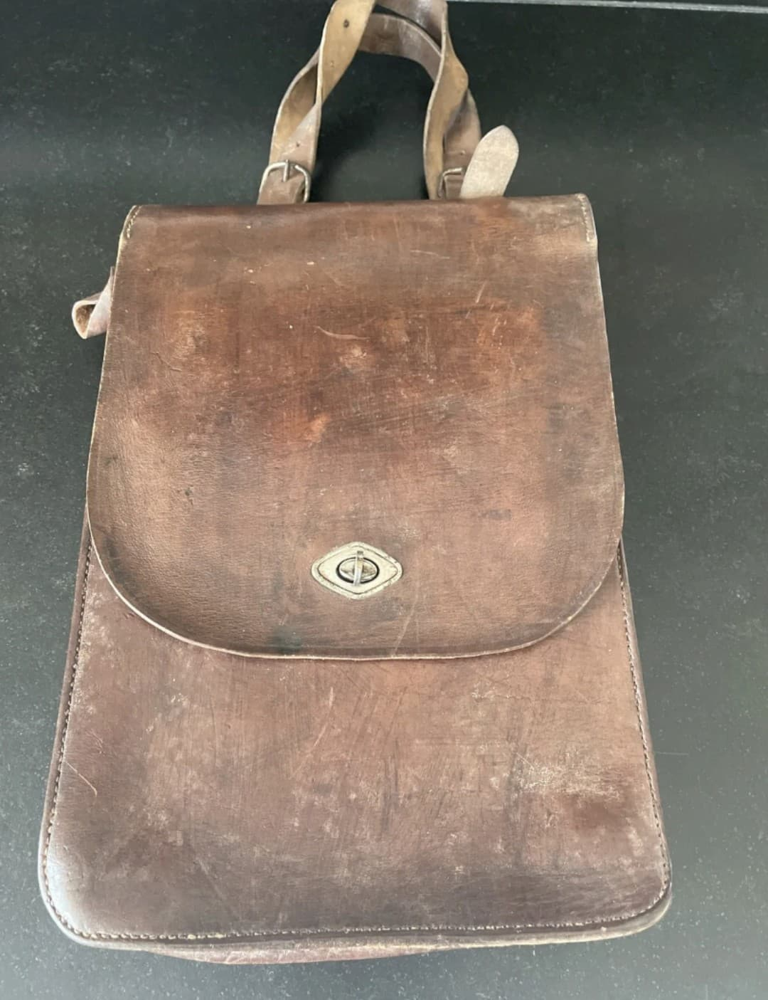

Les cartes d’État-Major françaises sont les cartes géographiques officielles utilisées par l’armée française durant la Seconde Guerre mondiale. Elles permettent le repérage, la navigation, la reconnaissance et la planification des opérations militaires.
Contrairement à une idée reçue, tous les soldats n’avaient pas de carte. Seuls les officiers, sous-officiers, éclaireurs, cavalerie, artillerie et transmissions en étaient équipés. Le fantassin simple suivait son chef, qui possédait la carte.

La France est quadrillée par 267 cartes, chacune couvrant un rectangle de 40 × 64 km, imprimées au 1/80 000. Le numéro de la carte est placé en haut à droite, avec les chiffres de la tranche et de la colonne.
Le cadre contient deux échelles de latitude et longitude : l’une en grades, l’autre en degrés. Le méridien d’origine est celui de Paris. Les relevés sont effectués par des officiers topographes, et les gravures réalisées par des graveurs militaires.



Les cartes d’État-Major étaient distribuées uniquement aux militaires ayant un rôle de commandement ou de navigation :
Le fantassin simple n’avait pas de carte. Il suivait son chef, qui lui possédait la carte du secteur.
Les sous-officiers et chefs de groupe utilisaient une pochette en toile kaki, simple et robuste, permettant de transporter une ou plusieurs cartes d’État-Major.

Les officiers utilisaient un porte-carte en cuir brun, plus élaboré, doté de compartiments internes pour les cartes, crayons gras, règles de tir et documents de mission.
